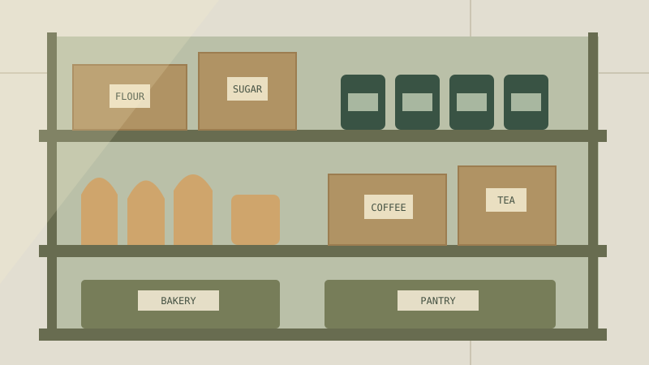

Live Inventory
Keep every SKU in sight. Catch low stock before it becomes an empty shelf.
RETAIL MANAGEMENT SOFTWARE
Inventory, POS, staff, and sales analytics — all in one place. Built for the store owner who doesn't have time to manage five different apps.
*Illustrative product metrics, not verified customer data.
✓ Staff rota published
○ End-of-day report
A clear view of your shop. A clearer head for you.
DESIGNED TO CONNECT WITH
Integration concepts shown; this demo connects to no external service.
Built around the real rhythm of retail.
From the first delivery to the final till count.
Keep every SKU in sight. Catch low stock before it becomes an empty shelf.
A simpler checkout, with card, cash and offline mode in the product concept.
See your busiest hours, bestsellers and daily performance at a glance.
Thoughtful purchase histories and loyalty tools to make regulars feel recognised.
Clear weekly rotas, shift swaps and labour planning. A calmer team starts here.
A proposed home for the commerce and accounting tools you already know.
01 / INVENTORY
Know what you have, what is moving, and what needs a little attention. Try a reorder in our sample stockroom.
Interactive sample only. Reorders update this browser session; no supplier is contacted.

A little attention now. A smoother tomorrow.
No payments are processed.
02 / POINT OF SALE
Quick checkouts that leave more time for your customers. Explore the shape of Flore's tablet-friendly POS.
Payment acceptance, offline transaction storage and printer connectivity are not implemented here.
03 / ANALYTICS
Your busiest hours. Your slow movers. The products people come back for. Make the next decision with a clearer picture.
No email digests or customer/staff data are collected.
REAL RETAIL RHYTHMS. ILLUSTRATIVE STORIES.
★★★★★“I used to spend my Sunday evenings updating spreadsheets. Now Flore does all of it automatically.”
SM · Sarah Mitchell
The Bloom Room · Austin
★★★★★“The inventory alerts alone saved us from three stockouts in the first month. Our wastage is down 22%.”
JO · James Okonkwo
Okonkwo & Sons Deli · London
★★★★★“We run three stores and Flore makes it feel like one. The multi-location dashboard is the best thing we've added.”
PS · Priya Sharma
Spice Route Grocery · Melbourne
Testimonials and results supplied by the concept brief; not verified endorsements.
A PLAN FOR YOUR NEXT CHAPTER
One price per store location. Illustrative plans.
Monthly billing. No checkout is connected.
STARTER
For stores getting started
PRO
For established store owners
SCALE
For multi-location retailers
Migration, cancellation and money-back terms are product concepts, not service commitments.
The proposed POS queues transactions and syncs when connectivity returns. This static demo processes no real transactions.
The concept offers assisted catalogue and customer-data migration. This page provides only a local setup checklist.
Shopify, Square, Stripe, Xero and QuickBooks are planned integration examples. No accounts are connected here.
The proposed product supports modern tablets and browsers, with compatible scanners and printers. This demo needs only a browser.
Illustrative monthly plans and annual pricing are shown above. No purchase or contract is created by this page.
The product concept falls back to Starter. The demo creates no account, subscription or timed trial.
LESS BUSYWORK. MORE BUSINESS.
Make room for the reason you opened in the first place.